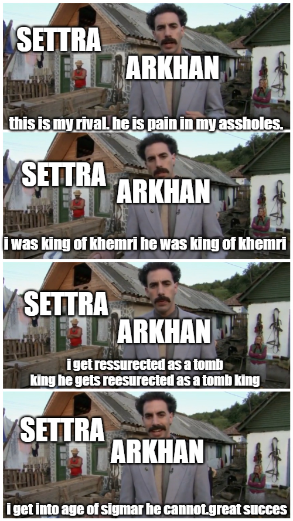

Settra, también conocido como Settra El Imperecedero, El Gran Rey Khemrikhara, El Gran Rey, El Gran Rey De Nehekhara, El Rey De Reyes, El Abridor Del Camino, Portador De La Llama Divina, Castigador De Nómadas, El Gran Unificador, Comandante De La Legión Dorada, Sagrado De Apariencia, Portador De Luz, Padre De Los Halcones, Constructor De Ciudades, Protector De Los Dos Mundos, Guardián De Las Horas, Elegido De P'tra, Alto Mayordomo Del Horizonte Marinero De La Gran Vitae, Centinela De Los Dos Reinos, El Indiscutible, Engendrador Del Engendrador, Azote De Los Infieles, Alimentador De Carroña, Primero Del Valle Del Osario, Jinete Del Carro Sagrado, Vencedor De Alimañas, Campeón De La Arena De La Muerte, Poderoso León Del Desierto Infinito, Emperador De Las Arenas Movedizas, El Que Sostiene El Cetro, Gran Halcón De Los Cielos, Archisultán De Atalan, Despertador Del Hierotitan, Monarca Del Cielo Majestuoso Emperador De Las Arenas Movedizas, Campeón De Los Dioses Del Desierto, Rompedor De Los Clanes De Ogros, Constructor De La Gran Pirámide, Terror De Los Vivos, Maestro Del Horizonte Interminable, Maestro De Las Necrópolis, Tomador De Almas, Tirano De Los Tontos, Portador De La Espada Sagrada De Ptravástago De Usirian, Vástago De Nehek, El Gran Cazador De Pesadillas, Guardián Del Corazón Real, Fundador Del Culto Mortuorio, Desterrador Del Gran Hierofante, Alto Lord Almirante De Las Flotas De La Muerte, Guardián Del Paso Charnal, Domador Del Rey Exánime, Señor De La Chaqueta Sin Vida, Despedida De La Reina Guerrera, Auriga De Los Dioses, El Que No Sirve, Asesino De Redditras, Purgador De Escarabajos, Favorecido De Usirian, Jugador Del Gran Juego, Libertador De La Vida, Señor Arena, Wrangler De Escorpiones, Emperador De Las Dunas, Soberano Eterno De Las Legiones De Khemri, Senescal Del Gran Desierto Arenoso, Maldito De Los Vivos, Regente De Las Montañas Orientales, Guardián De La Necrópolis Eterna, Heraldo De Todos Los Heraldos, Llamador Del Viento, Mordedor, Domador De Dios, Maestro Del Río Mortis, Guardián De Los Muertos, Gran Guardián De Los Obeliscos, Diácono Del Río Ash, Tardío De Los Despertadores, General Del Poderoso Marco, Invocador De Tormentas De Arena, Maestro De Todos Los Necrotectos, Príncipe Del Polvo, Tirano De Arabia, Purgador De Respiradores Greenspan, Asesino De Los Campeones De Los Falsos Dioses, Tirano De Las Dunas De Oro, Señor De Los Huesos Dorados, Vengador De Los Muertos, Maestro Carroñero, Guardián Eterno De Las Tierras De Nehek, Rompedor De Los Vínculos De Djaf, Y Muchos Muchos Mas..., es un personaje legendario del mundo de Warhammer Fantasy. Este poderoso rey no muerto gobernaba la antigua y majestuosa ciudad de Khemri, la joya del imperio de Nehekhara.
Conocido por su inquebrantable voluntad y su deseo de dominar, Settra busca la inmortalidad y la supremacía sobre todas las razas. Su ejército de no muertos es temido en todo el mundo conocido, y su sed de poder es insaciable.
A lomos de su majestuoso carro funerario, Settra lidera sus huestes en la búsqueda de la conquista total. Su lema es conocido por todos: "Settra no tiene amigos. Settra necesita a nadie."
A continuación, se presentan algunos aspectos destacados sobre Settra el Imperecedero:
Rey de Khemri: Settra gobernaba sobre la antigua y gloriosa ciudad de Khemri, que era la joya del reino de Nehekhara. Nehekhara es un reino desértico y antiguo, y Khemri era su capital.
No Muerto: Settra es un rey no muerto, lo que significa que ha sido resucitado mediante poderosos rituales de necromancia. A pesar de su naturaleza no muerta, retiene su voluntad y personalidad, y su deseo de dominio y conquista es inquebrantable.
Carro Funerario: Settra es conocido por montar un majestuoso carro funerario tirado por esqueletos, que es tanto un símbolo de su estatus como un formidable vehículo de guerra. Este carro es a menudo utilizado en la batalla para liderar a sus fuerzas.
Sed de Poder e Inmortalidad: La característica más destacada de Settra es su insaciable sed de poder y su búsqueda de la inmortalidad. Su lema, "Settra no tiene amigos. Settra necesita a nadie", refleja su actitud despiadada y su creencia en su propia supremacía.
Líder en la Batalla: Settra es un líder formidable en el campo de batalla. Su presencia inspira a sus tropas no muertas, y su destreza en combate es legendaria.
Settra el Imperecedero es una figura icónica dentro del lore de Warhammer Fantasy, y su historia refleja la oscura y fascinante ambientación del mundo creado por Games Workshop.
En el universo de Warhammer Fantasy, Settra el Imperecedero y los Dioses del Caos tienen una relación compleja. Los Dioses del Caos representan fuerzas malignas y corruptas que buscan sembrar la destrucción y el caos en el mundo, mientras que Settra, como líder de Khemri y rey no muerto, tiene sus propias aspiraciones y motivaciones.
Settra, siendo un ser ambicioso y sediento de poder, no aceptaría fácilmente la influencia o la dominación de los Dioses del Caos. Él tiene sus propias metas, que generalmente incluyen la expansión de su imperio no muerto y la consecución de la inmortalidad. La filosofía de Settra se centra en su propio dominio y supremacía, y él no es propenso a someterse a fuerzas externas.
Sin embargo, en el mundo de Warhammer, las influencias de los Dioses del Caos son omnipresentes y a menudo insidiosas. Los eventos catastróficos y las invasiones lideradas por los seguidores del Caos pueden afectar a cualquier facción, incluida Khemri y su rey no muerto. Settra podría enfrentarse a desafíos de cultistas del Caos, demonios y otras criaturas corruptas que buscan socavar su imperio y su poder.